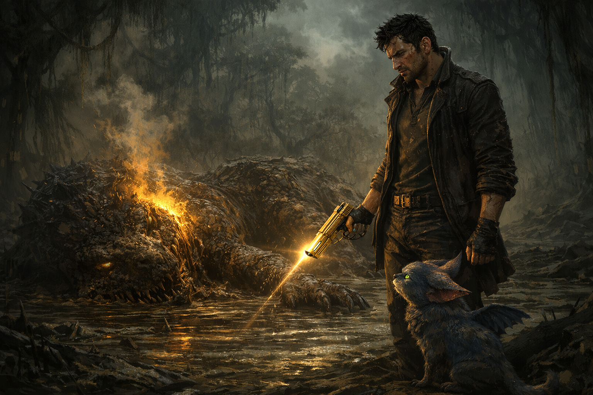

La rabia acumulada por meses encontró finalmente un canal. Saqué la Golden Gun con una velocidad que ni yo mismo esperaba. La criatura rugió y avanzó hacia nosotros, pero mis manos ya apuntaban directo a su pecho. El disparo iluminó el pantano con un destello dorado. La criatura cayó pesadamente en el fango con un quejido que resonó por todo el planeta. Silencio. KAWA no celebró. No saltó ni ladró como solía hacer después de una pelea. Se quedó quieta, mirándome fijamente con sus grandes ojos brillantes. Era esa mirada que me ponía incómodo, la que significaba que había notado algo que yo aún no quería admitir.
Sentí algo extraño recorrerme por dentro. Un calor oscuro que no era mío. La Golden Gun no era un arma ordinaria. Había sido forjada con energía de odio puro, y cada vez que la usaba, dejaba una pequeña parte de esa oscuridad en quien la disparaba. Lo sabía desde el principio. Simplemente nunca me había importado demasiado. Pero esta vez fue diferente. Miré a la criatura caída y no sentí alivio. Sentí satisfacción. Una satisfacción fría y ajena que me asustó. Pensé en Elvira y en lugar de tristeza, sentí resentimiento. Eso no era yo. KAWA se acercó despacio y apoyó su cabeza contra mi pierna. Su manera de decirme que seguía ahí. Su manera de advertirme.
¿Qué decides?
Opción A: Obedecer a la oscuridad y seguir explorando el planeta